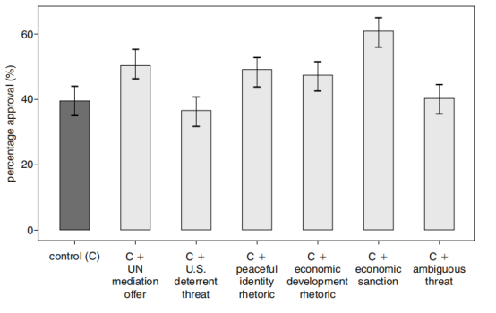
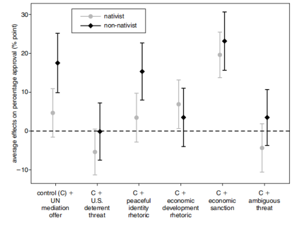
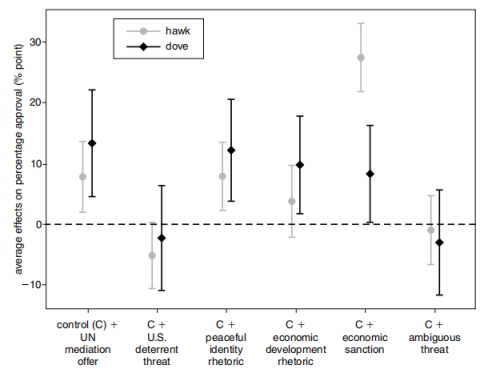

收录于合集

作品简介
【作者】
Kai Quek：郭全鎧，香港大学政治与公共行政学系副教授，政治学研究生培养委员会主席，主要研究领域为国际战略互动、危机升级与降级等。
Alastair lain Johnston：江忆恩，美国哈佛大学政府系教授，被誉为“美国新生代中最出色的中国问题专家”。江忆恩的研究领域集中于社会化理论、身份与政治行为、战略文化等，其代表作有《社会国家：中国与国际体系1980－2000》、《文化现实主义：中国历史中的战略文化与大战略》。
【 编译】 金琳（国政学人编译员，外交学院国际关系研究所）
【校对】 曹鹏鹏
【审核 】 蔡宇
【排版】 王国伟
【 来源 】 Kai Quek and Alastair Iain Johnston,“Can China Back Down? Crisis De-escalation in the Shadow of Popular Opospition，” International Security , Vol. 42, No. 3 (Winter 2017/18), pp. 7–36.
期刊介绍
《国际安全》（International Security）于1976年创立，是国际和国家安全领域的顶级同行评议学术期刊，以季刊形式发行。由哈佛大学贝尔弗科学与国际事务中心（Belfer Center for Science and International Affairs at Harvard University）编辑，麻省理工学院出版社（MIT Press）组织出版。根据2018 Journal Citation Reports显示，其影响因子为4.500，位列“国际关系”类别期刊第二位。
中国会让步吗？公众反对阴影下的危险降级
Can China Back Down?
Crisis De-escalation in the Shadow of Popular Opposition
内容提要
面对国际危机，领导人如果选择让步会面临观众成本的压力。作者在扩展已有研究的基础上，详细说明了无论是民主国家还是非民主国家，面对要求保持强硬态度的公众压力，政府可以采取一系列现实策略以降低观众成本。由于中日领土争端的现实性，作者认为可以在中日领土争端的情景下设计对照试验分析不同变量影响下公众支持率的变化。研究结果表明，领导人在危机中让步所付出的代价，既受到现实策略的影响，也受到民族主义和军费开支等基本偏好的影响。这表明在危机中让步或克制的成功既取决于民族主义者中的本土主义者和鹰派的分布，也取决于政府动员非本土主义者和鸽派的能力。本文主要分为四个部分。首先，作者回顾了与观众成本相关的文献以及领导人在控制观众成本灵活性的问题；其次，作者根据中日领土争端设计并实施调查；再次，通过对照组和实验组的数据，作者比较了不同变量影响下公众支持率的变化；最后，作者讨论了实验结果和公众支持率之间的关系并提出相关的政策建议。
**
** 文章导读
一、 观众成本与领导机构 ****
观众成本(Audience Cost)主要是指决策者向国外行为体公开发出威胁后又退却所遭受的国内政治惩罚。观众成本理论认为，在危机期间，如果观众成本上升，一方面增强了威慑信号的可信度；另一方面，领导人缺乏放弃此前发出威胁的动力，一旦让步，公众支持率会降低，领导人的威信力下降，会使政治议程推进困难。与此同时，国内公众还会向领导人施加压力，要求其采取行动促使冲突升级。 学者对于观众成本提出了许多尖锐的批评，其中有三个主要的批评，共同表明现有的观众成本研究缺乏现实性，因而限制了普遍性。首先，观众成本的调查和实验数据几乎完全来源于美国受访者，缺乏对其他国家和政体的分析，特别是缺乏对专制政体中，政府鼓励公众支持民族主义和维护国家主权的外交政策的分析。其次，在判断领导人表现时，受访者被要求对不明确的假设情境表明态度做出选择，但这些假设情境可能与他们的判断无关。最后，领导人被描述为是缺乏能动性的，无法采取行动控制观众成本。多数观众成本的相关文献假定，领导人无法通过公开发表言论或使用非军事化政策减少国内公众对其让步的批评。然而，理性的领导人会在危机中保持灵活性，包括在付出最小的国内代价前提下，做出必要的让步。但相关文献并没有检验领导人是如何使用具体政策或手段来降低因让步而产生的观众成本。虽然有研究表明，面对领导人的让步理由，观众成本有可能会受到限制，但他们只测试了基于成本的有限范围的影响。实际上，领导人可能会有更多具体的理由来为其让步辩护，其中一些可能更能减少公众的不满。在解决冲突的相关文献中，国际机构、第三方干预和经济相互依存是最突出的三个因素，但在观众成本和危机降级背景下，这三种因素都没有得到检验。
二、 实验设计与结果 ****
作者根据中日对钓鱼岛及其附属岛屿的主权归属争议于2015年进行了一项调查，调查范围覆盖了中国所有省份和省会城市。在中日钓鱼岛争端中，东京单方面宣称拥有钓鱼岛的主权并实施行政控制，并通过在钓鱼岛及其附属岛屿修筑建筑物加强对钓鱼岛的实际控制，这引起了中国的强烈抗议。作者采取对照实验法考察了中国公众对领导人的支持。在对照组中，领导者发出使用武力的威胁，但最终却对日让步；在实验组中，领导者在一系列具体的、貌似合理的经济、政治和战略行动或条件下采取对日让步的行为。大多数学者认为，由于中日双方都担心对方会从根本上加强对钓鱼岛及其附属岛屿的行政控制，因此双方在钓鱼岛采取的行动可能会引发武装冲突，尤其是美国可能会使用武力保卫日本军队。正是这种场景的可信性，增强了对受访者反应评估的真实性和有效性。因此，此种危机设定并非是不切实际的。由于中国舆论长期敌视日本，中日关系的现实案例能展现出不同的战略和退让理由对支持率有何种积极影响。为保证简洁有效，作者对于场景的假设只关注危机的客观事实。受访者面临的危机场景如下“中日对钓鱼岛及其附属岛屿的主权归属问题存在长期的争议，而日本通过在钓鱼岛及其附属岛屿上建造建筑物宣称对其的‘实际控制’”。因变量衡量的是公众对领导人处理危机方式的支持程度。作者通过提出两个问题衡量因变量，受访者首先被问及是否“支持、反对或既不支持也不反对领导人处理问题的方式”。在第一个问题中，作者给出了支持或反对领导人行为的受访者的原始比例。在第二个问题中，作者分别询问支持者、反对者、既不支持也不反对者在多大程度上支持或者反对原有的判断。对这两个问题的回答会产生从0分(强烈反对)到6分(强烈赞成)的7分制的支持率，结果显示受访者对领导人行动的支持率和原始百分比。实验组衡量不同变量下公众支持率的差异。受访者的随机分配保证了统计学意义上，实验组与对照组所有特征都相同。作者将受访者随机分配到对照组和六组不同变量的实验组中。对照组和六种不同变量都有相同的危机情景，唯一的区别是中国领导人对应对危机的方式。六种不同变量涵盖了可以在现实世界观察到的一系列可能的选择，这些选择在不同程度上影响了让步的成本。被随机分配到对照组的受访者的情景为“中国领导人强调，如果日本继续在钓鱼岛及其附属岛屿建造建筑物，中国将采取军事行动，在日本并未停止建造建筑物的行为的前提下，中国领导人放弃对日本采取军事行动”。与此同时，六组的受访者阅读了与对照组相同的情景，但在其情景中包含了特定的附加条件和信息。六组中的变量及其影响结果如下：1、 变量1：联合国调解。 与对照组相比，在联合国调解下，领导人的平均支持率上升了11个百分点，具有统计显著性差异。变量1的平均支持率为3.70，高于对照组的3.24。作为稳健性检验，作者使用有序logit模型以估计公众支持与假设之间的关系。如果受访者被随机分配到联合国调解的条件下，则联合国调解的变量被编码为1，如果被分配到对照组，则被编码为0。有序logit分析结果表明，联合国调解是积极以及有统计学意义的变量（附录2）。结果表明，在中日冲突的情况下，中国公众是愿意接受联合国调解的。也就是说，联合国的调解可能会降低中国领导人让步的成本。2、 变量2：美国威慑。 在美国威慑的条件下，公众支持率下降了约3个百分点，尽管这种差异在统计学上并不显著。该条件下的平均支持率为3.04，低于对照组的3.24，这在边缘阈值具有统计学意义。有序logit分析表明，公众支持与美国威慑条件之间存在负相关关系（附录2）。结果表明，受访者并非总能理性地计算钓鱼岛争端的潜在成本。尽管美国军事力量比中国更强大是普遍共识，但受访者拒绝原谅一个在美国威胁下就退缩的领导人。当领导人理性地计算美国干预成本时，公众不愿增加对让步的支持。3、 变量3：和平的角色认同。 在变量3中，公众对领导人的支持率提高了9个百分点，平均支持率为3.60，高于对照组。结果表明，受访者对其角色认同的构成规范十分敏感，领导人常在外交政策中宣称中国热爱和平，起到了减少让步的成本的作用。4、 变量4：经济成本。 当领导人发表中日冲突致使中国经济受损的声明时，受访者对领导人的支持率上升了8个百分点。该变量下的平均支持率为3.60，高于对照组。有序logit模型显示，公众支持与经济成本之间存在正相关关系（附录2）。结果表明，当涉及到重大的成本收益时，受访者会对在危机中领导人是否应该选择让步进行分析，降低领导人让步的成本。5、 变量5：经济制裁。 中国领导人在决定让步的同时对日本实施经济制裁。在该变量下，受访者对中国领导人的支持率上升了21个百分点。该变量下的平均支持率为4.11，明显高于对照组。因此，如果中国领导人让步的同时选择经济制裁，将最大限度地降低观众成本。6、 变量6：模糊性威胁。 在中国领导人对日本发出的威胁具有模糊性的情况下，受访者对中国领导人的支持率基本没有发生变化，该条件下的平均支持率为3.19（对照组为3.24）。结果表明，公众并未将领导人威胁使用武力的言辞解读为正在考虑对日使用军事威胁，这与研究相关问题的外国专家所认为领导人这一言辞意味着“可能使用武力回应”存在明显的不相符合。

图1 不同变量下的公众支持率
三、 民族主义者和鹰派的影响 ****
1、民族主义者中的本土主义者与非本土主义者 民族主义是一种复杂的、多面向的情感，包括对国家内部团体的基本认同感，以及一种对领土的强烈依恋感和排斥诋毁外来者的本土主义因素。一般来说，民族主义者中的本土主义者对国家相对收益十分敏感，因此，本土主义者在外交政策上可能是强硬派，在与外界的军事或经济交往中更倾向于采取强硬手段，所以公众强烈的民族主义情绪会削弱领导人控制观众成本的能力。为了衡量本土主义的影响程度，作者询问受访者对以下陈述的认同程度：“无论国家对错与否，人们都应该支持自己的国家”，作者利用虚拟变量对回答进行编码，即用1表示同意，用0表示不同意。如图2所示，本土主义者并不相信放弃对日本惩罚的任何理由。联合国进行调解的提议并没有明显提高本土主义者对于领导人的支持率，却使非本土主义者对领导人的支持率显著提高。针对对领导人宣称的和平身份，本土主义者态度冷漠，而非本土主义者对领导层的支持激增。然而，当领导人利用经济制裁惩罚日本时，本土主义者和非本土主义者对领导人的支持率都大幅上升。与非本土主义者相比，本土主义者将会让领导人因美国威胁而让步付出更大的代价，这一结果表明，由于领导人对公众舆论中本土主义因素十分敏感，美国采取“成本强加（cost imposition）”等威胁性战略可能会适得其反。

图2 不同变量影响下的本土主义者与非本土主义者
2、鹰派与鸽派作者同样利用虚拟变量，提出下列问题“作为一个发展中国家，中国政府应当将有限的资源和预算分配到不同领域。一些人认为，为了建立良好的社会福利体系，政府应当减少国防开支，你是否同意这个观点？”。作者将同意该观点的人称为“鸽派”，不同意该观点的人称为“鹰派”。无论是鸽派还是鹰派，对在联合国调解提议下而让步的领导人的支持率都高于对照组。鸽派和鹰派在不同程度上认同中国和平的角色，公众支持率增加。与鸽派相反，鹰派明显不相信中日冲突加剧会导致经济成本提高的说法。而在美国威慑的条件下，鸽派的支持率与对照组相比没有明显变化，而鹰派在领导人在面对美国威胁做出让步时，支持率则显著下降。

图3 不同变量影响下的鹰派和鸽派
总之，在中日领土争端危机中，本土主义者和鹰派观点的分布影响了领导人降低观众成本策略的有效性。在作者的样本中，非本土主义者约占41%，鸽派约占33%，作者认为他们构成温和派选民。尽管并不清楚此类选民在整个国家中占多大比例，但问题的关键是，中国政府是否意识到存在数量庞大的温和派意见，以及领导人是否有兴趣对其进行广泛的动员，以保持在危机中的灵活性。
四、 结 论 ****
****在国际危机中，政府会受到公众压力。尽管观众成本提高了政府与对手讨价还价的筹码，但同样也会诱使领导人想方设法防止危机进一步升级。作者在扩展已有研究的基础上，详细说明了无论是非民主国家还是民主国家政府，当面对要求保持强硬态度的公众压力时，政府可以采取的一系列现实策略。领导人在危机中让步所付出的代价，受到民主主义和军费开支等变量的影响。这表明在危机中让步或克制的成功，既取决于民族主义者中的本土主义者和鹰派的分布，也取决于政府动员非本土主义者和鸽派的能力。
_ ** _ ** _ ** _ 本文由国政学人独家编译推荐**__
扫下方二维码查看往期精彩
【新刊速递】第01期 | Review of International Studies Vol.45, No.4, 2019
【新刊速递】第02期 | International Relations Vol.33, No.3, 2019
【新刊速递】第03期 | International Organization Vol.73, No.3, 2019
【新刊速递】第04期 | World Politics, Vol.71, No.4, 2019
【新刊速递】第05期 | European Journal of International Relations
【新刊速递】第06期 | Security Studies, Vol.28, No.4, 2019
【新刊速递】第07期|International Security, Vol 44, No. 2, 2019
【新刊速递】第08期| Cambridge Review of International Affairs,Vol.32,No.4
【新刊速递】第09期| International Relations of Asia-Pacific Vol.19,No.3
分类导览 1
分类导览 2

点“在看”给我一朵小黄花